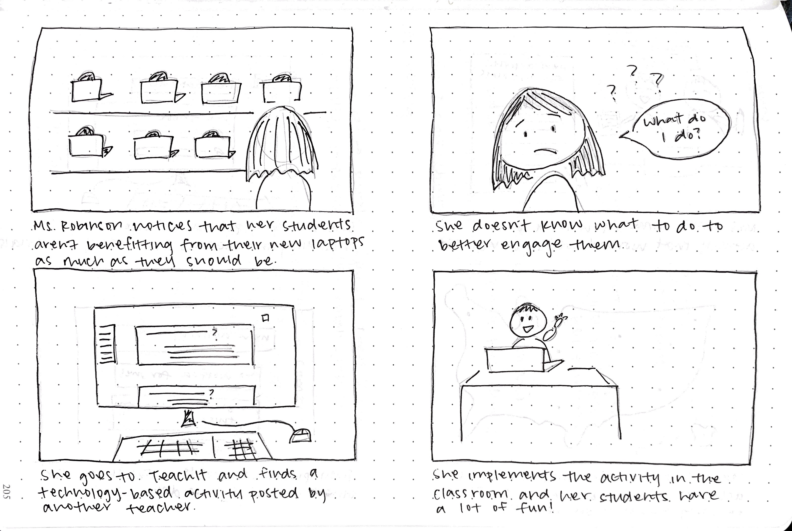
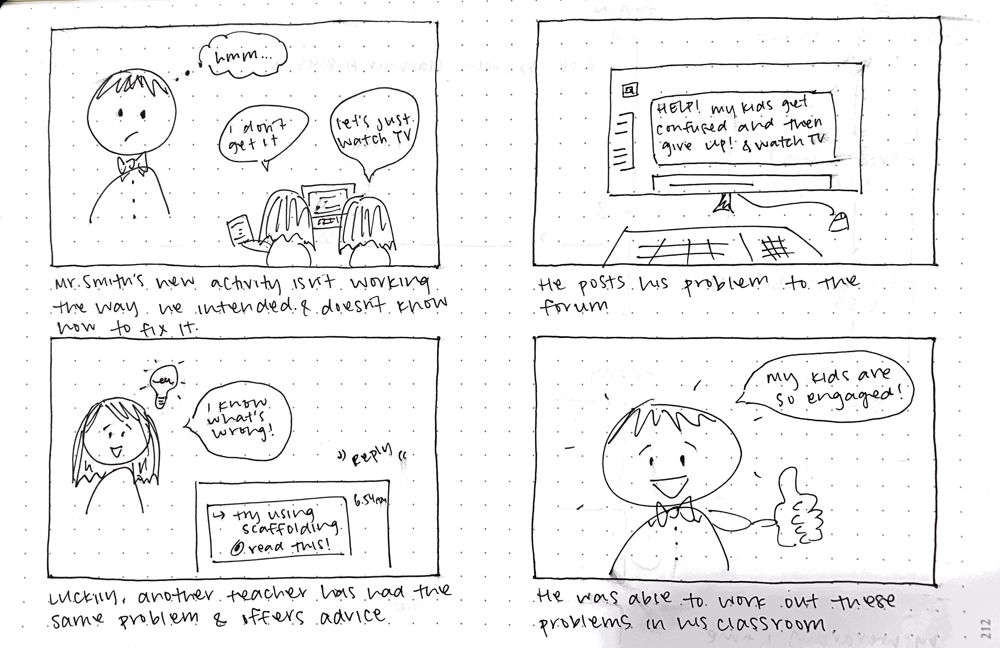
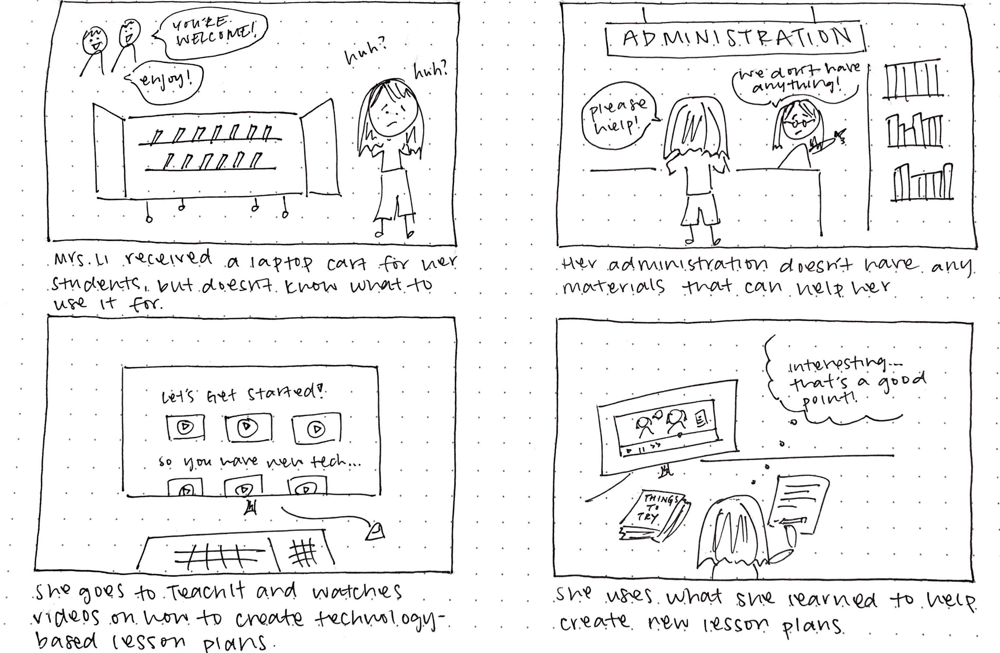

OVERVIEW
I worked with undergraduate students Shalini Rao and Mashia Mazumder on this semester-long design research project tackling an educational problem of our choosing - we focused on the lack of continued support from district adiministration, leading to improper integration of new educational technology in the classroom. There are serious implications for students who will suffer the detrimental effects of poor technology integration.
MY CONTRIBUTIONS
I contributed to the background research that helped to inform the main features of our final product. A large portion of our project focused on this preparatory research. Later in this process, I was also responsible for getting user feedback. The entire team collaborated to produce the design of our product - both low and high fidelity wireframes.
LEARNER'S PROFILE
Our target audience is K-12 teachers employed in low-income areas in the United States, whose respective school can supply students with technology such as computers. As the resident experts of their students’ needs and learning styles, teachers using our platform should aim to effectively integrate technology into the existing curriculum and classroom activities. As educational technologies evolve rapidly, we want to provide access to tools that enable teachers to move with the advancement of education, rather than against it. Assuming that the school has access to computers or other learning technologies, teachers can use and familiarize themselves with the technology as they prepare for bringing it to students. To provide ongoing support beyond professional development workshops, we have created a centralized platform featuring links to various online resources and workshop materials and a forum for teachers and administrators to share their experiences and learn from each other on what does and does not work in the classroom or school-wide setting.
UNMET NEED
K-12 teachers in lower-income areas often are not provided with the instruction and support on how to best integrate the technology they are given into their curriculum. While they may learn how to use an iPad or laptop, they are not necessarily guided on embedding the technology into activities and lesson plans or considering the overall role of the device in the classroom.. The main issue here is technological illiteracy among the teachers and not being able to see the bigger picture of how to work devices into a better quality curriculum for their students. Teachers have the challenge of keeping their students deeply engaged and motivated, while providing feedback and scaffolding in lessons to improve student performance. It is also important to keep in mind how, if improperly integrated, technology-based curriculums can disadvantage lower income students; for example, if students are given online homework, not having reliable access to a computer or Internet at home may prevent some students from completing their assignments. This example shows how important it is for teachers to make informed decisions on technology use in the classroom, considering factors such as the availability of technology in their students’ environments. Additionally, choosing to "implement technology" in trivial ways by having students type out their homework or do tasks that repeat traditional practices does not harness the full potential of educational technologies. Teachers are not being trained on what real technology based learning can look like and they have not been shown the numerous other ways that students can use technology in the learning process, rather than just in assessments and assignments.
PROBLEM STATEMENT
The problem we focused on is that teachers are not implementing new technology in their classrooms in an effective way. This may be because although administration has the resources to provide teachers with new technology, they are not allocating enough resources to teaching teachers how to use that technology. This problem has persisted for a long time because when a new technology is introduced, there is a huge peak of inflated expectations. School systems falsely rely on that excitement rather than trying to figure out how to create a lasting solution using that technology. Unfortunately, teachers receive most of the blame when the trough of disillusionment hits, but the responsibility should be on both teachers and their administration to properly implement any new technology.
DEEPER PROBLEM UNDERSTANDING
Since our target audience consisted of teachers, specifically in low-resource areas, it was difficult to contact that exact audience for interviews or user testing. Instead, we broke down our target audience into what they are fundamentally: adults who had minimal experience with technology who then needed to become more skilled for their jobs. All of our parents were born internationally and were forced to pick up technology literacy when they arrived here either for work or school. So, we decided to ask our parents about their experience, specifically about what resources they had or used when pushed to transition into digital literacy.
Their responses may not be an accurate representation of our target audience of teachers in low-funded areas in the US. However, it was evident that both users preferred to talk to people instead of reading resources or books. This informs the motivation behind our forum, which teachers can use to talk to one another and ask specific questions. Interpersonal interactions provides better support than the one way interaction between a teacher and a webpage.
SOLUTION OVERVIEW
Our solution will be in the form of a website that essentially teaches teachers how to implement technology in the classroom. There will be three main features:
CASE FOR THE SOLUTION
Forum
One of the main features of our product is the forum - a platform that allows teachers to ask questions, give advice, and share effective technology-based lesson plans they found helpful in their own classrooms. The purpose of the forum is to connect teachers from all over the world, providing the extra support they don’t receive from their administration. Research has found that when teachers lack support, it leads to discouragement of using technology in the classroom. Teachers are afraid to get creative in the classroom and would much rather be told what to do. Since administration plays a very limited role in this process, teachers are left with minimal guidance. For significant and long lasting change, teachers need support from the district and building level. While our platform does not aim to replace administrative roles, it offers continued support beyond the required professional development workshops (Canough). Our forum would inspire teachers who are scared to step outside their comfort zone by fostering teacher collaboration. Our Forum was also inspired by the case for Quality Teaching Rounds. Multiple teachers work together in a professional learning community where they observe and analyze lessons in each other’s classrooms. What sets this apart from traditional professional development workshops is that it focuses on improving a particular skill or teaching a particular topic, rather than improving teaching in general. Research shows “that a low-cost approach that relies on teachers learning together, shows significant, quantifiable improvements in the quality of teaching.” This teacher collaboration aspect is very prominent in our forum as we highlight the importance of connecting with other teachers. This also helps create a community similar to the one described in Quality Teaching Rounds. This process has been proven to work in an experiment in Australia, which led us to believe that this model of teaching could be applied universally (Gore). Thinking about how to implement this success into our project, we set out to create a virtual community where teachers can still collaborate and analyze each other in the classroom, but remotely.
Professional Development Workshops
Currently, professional development workshops exist; they are offered by administration and required for teachers. However, these workshops are not effectively teaching teachers how to actually implement the technology in their classrooms. According to the American Physiological Society, teacher confidence translates to student achievement. It’s important for teachers to work on their professional development while also becoming more confident in their teaching. This is especially important for teachers who don’t have a strong STEM background. The lack of confidence could have a large impact on their teaching if they need to incorporate new technology in their classrooms. One of the more difficult problems revolves around teachers who are resistant to change. Traditional teachers are not only unwilling to learn the new technology, but this means they will not work towards becoming more confident with the new technology. When administration decides to incorporate new technology into their district, the students of these teachers will have lower learning gains. This feature is aimed at trying to boost teacher confidence in the classroom. It will contain videos of us going to the schools and teaching at professional development workshops. The difference between our workshops and the ones already offered by the administration is that we will be using the latest techniques backed by research. Our lesson plans will include relevant learning principles. We would also post the raw teaching materials used to teach at these workshops. In this way, teachers who were not in attendance or want a review of what happened can follow along with the videos using the materials. Our goal is to try to make this tool easy and accessible. We want it to be helpful in bettering teachers in the field of technology.
Resources
Since teachers will already be using this platform for the forum and workshop features, this added aspect supplies teachers with productive links that already exist online. The links included in our product prototype were sourced from popular platforms for educators such as TeacherVision and Edutopia, and direct users to app tutorials, blog posts, multimedia websites and apps that can be incorporated into lesson plans and assessments, and more. These pages can serve to familiarize teachers with not only how to use the technology but also how to add variety and increase student engagement in the classroom. There are currently several platforms that offer access to similar resources, such as Common Sense Education, TeachThought, and the two mentioned above. However, some come with subscription walls, thus limiting access for people in low-resource environments, and the technology section is often hidden in an array of tabs or menus. As a teacher, finding quality resources specific to your needs or environment means combing through a lot of different websites before you find what you’re looking for. We want to make searching convenient and easy, without the paywall. This section consolidates and organizes all of these resources into one place.
EDUCATIONAL GOALS, INSTRUCTION, AND ASSESSMENT
A large majority of our efforts this semester was put toward performing research on why such a platform should exist, rather than the platform itself. We created our prototype to demonstrate how our findings from research and interviews played into the design decisions for the features and layout of the platform. Also, since our main focus is a web-based platform, there was not a particular curriculum developed as a result of the project, but rather a large explanation as to why such a platform is necessary and would be beneficial for our target audience.
Goals
Instruction
Our in-person instruction will take place during the normal professional development workshops that public school teachers already have to go through. Otherwise, it will be hosted in the video workshops and tutorials included in the Workshops page. The entire platform could be described as instruction, since teachers are learning new things with every interaction. This is more obvious if they take one of the online workshops, but they would be learning from other teachers’ experiences and the resource collection we have available as well.
Assessment
Due to the nature of our project, there is no formal assessment of the teachers’ skills. Rather, we would assess the impact of our platform by looking at the performance of their classrooms before and after the use of the platform. If students are learning better and are more engaged, we could deduce some impact from our platform on the teacher’s methods and activities. The platform would have somewhat of a “trickle down” effect on the students’ learning as a result of helping and empowering the teachers.
DESIGN AND STORYBOARDS
The storyboards below demonstrate different ways teachers will be able to utilize our final product.
Lesson Plan Inspiration This storyboard demonstrates the “Forum and Discussion Board” feature of our product, where teachers are able to use other teachers’ creative lesson plans when they need something new in the classroom.

Sharing Lesson Plans This storyboard shows the other side of sharing successful lesson plans. When teachers find that one of their lessons worked really well in the classroom, they are able to share them with other teachers through the “Forum and Discussion Board” feature of our product.

Seeking Help Within the Classroom This storyboard shows yet another way teachers can utilize the “Forum and Discussion Board” feature of our product. In addition to sharing lesson plans, teachers can seek help with specific problems they may be having in the classroom.

Utilizing Online Resources and Workshops This storyboard highlights the resources our product provides when teachers don’t have the option of turning to their administration. When struggling to create new technology-based lesson plans, teachers can watch our online workshops and consolidated list of resource links to guide them.

FORMATIVE ASSESSMENT AND REDESIGN
Since our target audience is teachers in low-funded areas, it was difficult to contact them for user testing. However, we did a bit of user testing with our peers. We briefed them on our project and the purpose of the platform as a start, but they were told to think aloud as they navigated through our prototype. These are the comments they made about the prototype as well as the platform overall. We also included ideas for future implementations on how to make the platform more accessible and beneficial for teachers.
Comments from User Testing
Future Design Implications
FINAL PROTOTYPE
View the final prototype
PERSONAL TAKEAWAYS
REFERENCES
Canough, Jeanne, "Effective Implementation of Technology" (2013). Education Masters. Paper 261.
Gore, Jenny. “Here's How to Support Quality Teaching, with the Evidence to Back It.” Phys.org, Phys.org, 27 July 2018, phys.org/news/2018-07-quality-evidence.html.
American Physiological Society. “Online Professional Development Boosts Teachers' Confidence, Knowledge.” Phys.org, Science X Network, 21 June 2018, phys.org/news/2018-06-online-professional-boosts-teachers-confidence.html.